Black and White Study
What happens when color is fully stripped from an image?
In this collection, I chose to explore that very question by focusing on the raw essence of shape, form, and space. Without the distraction of color, the eye is drawn to the subtleties of light, shadow, and texture, allowing the composition to speak more powerfully.
Inspired by Japanese aesthetics, I reflected my selections based on the “Wabi-Sabi” concept which embraces finding beauty in things that are natural, understated, and unadorned.
view full collection


 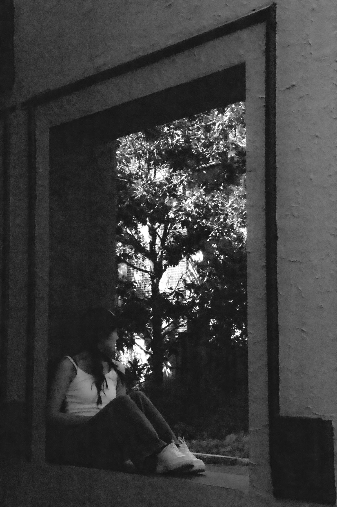
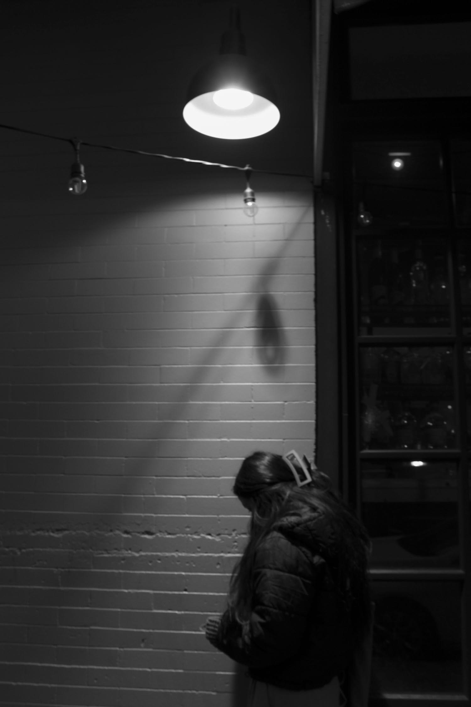
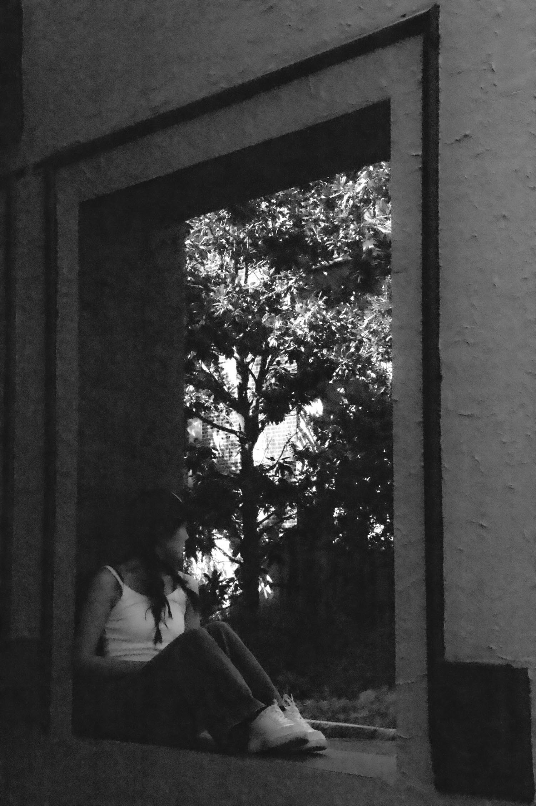
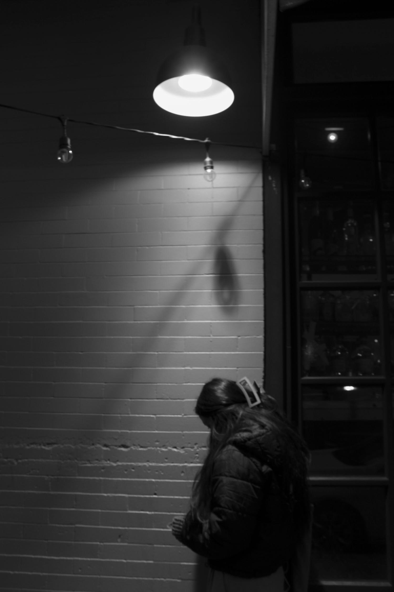
 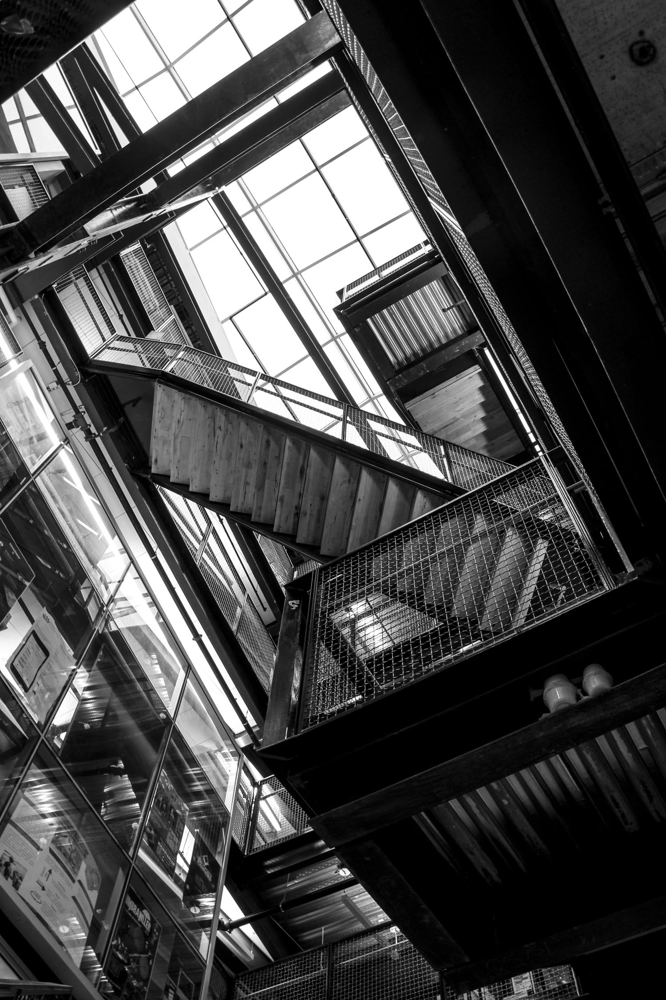
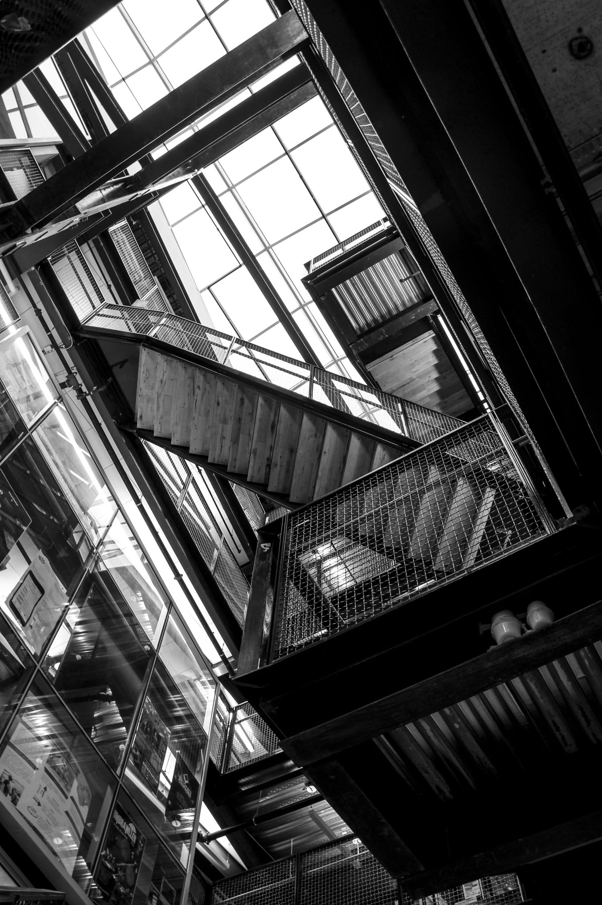
 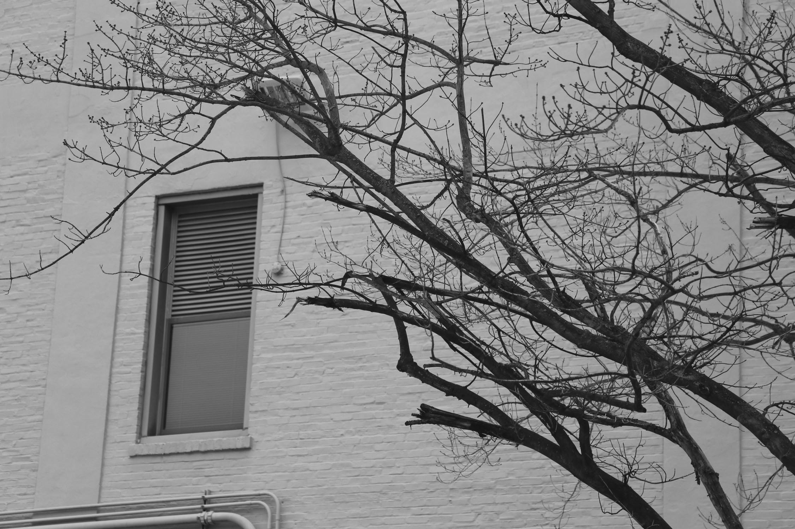
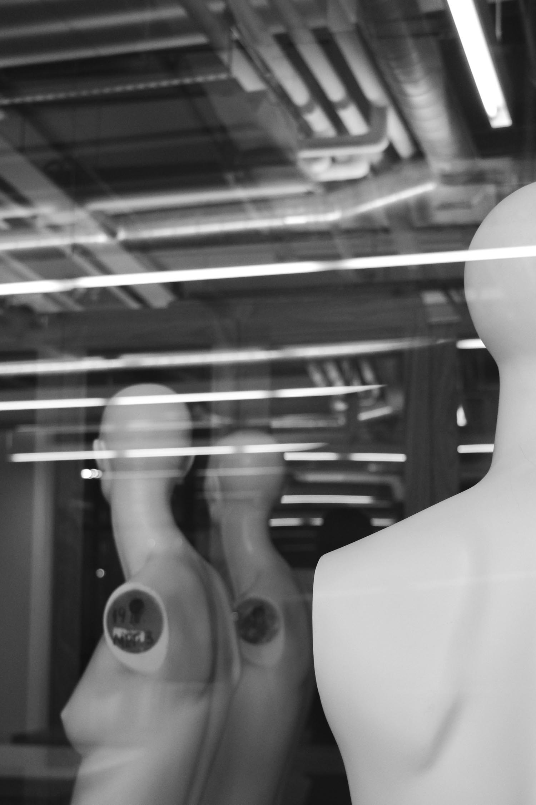
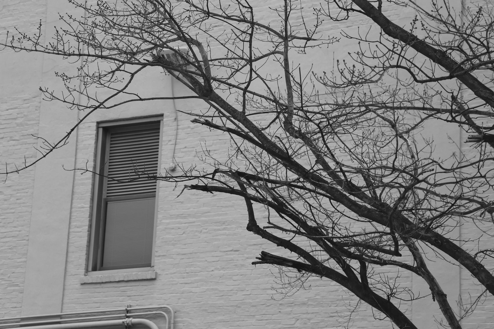
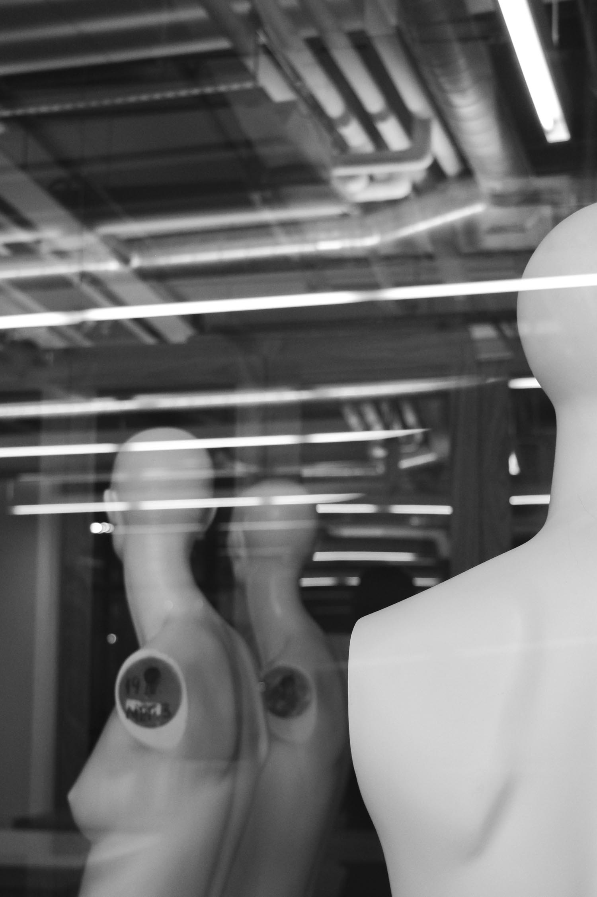
 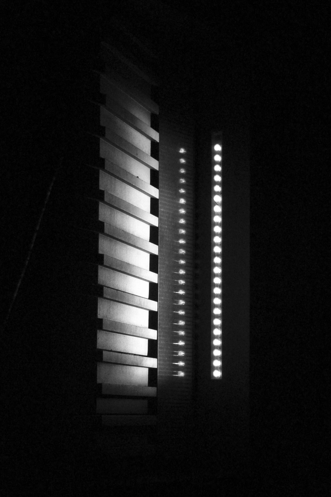
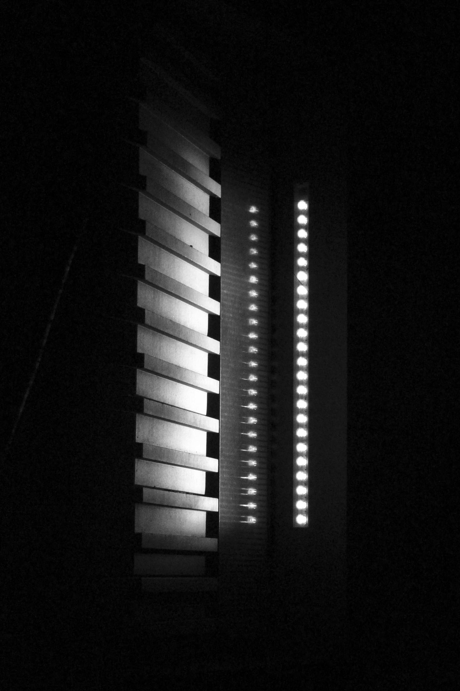

 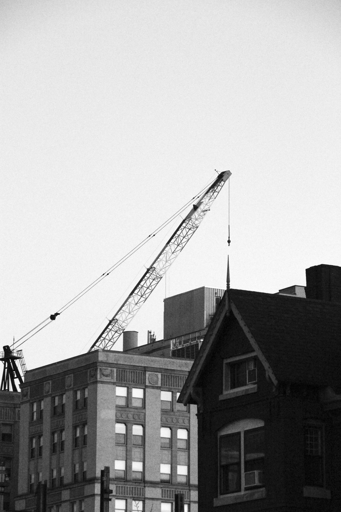
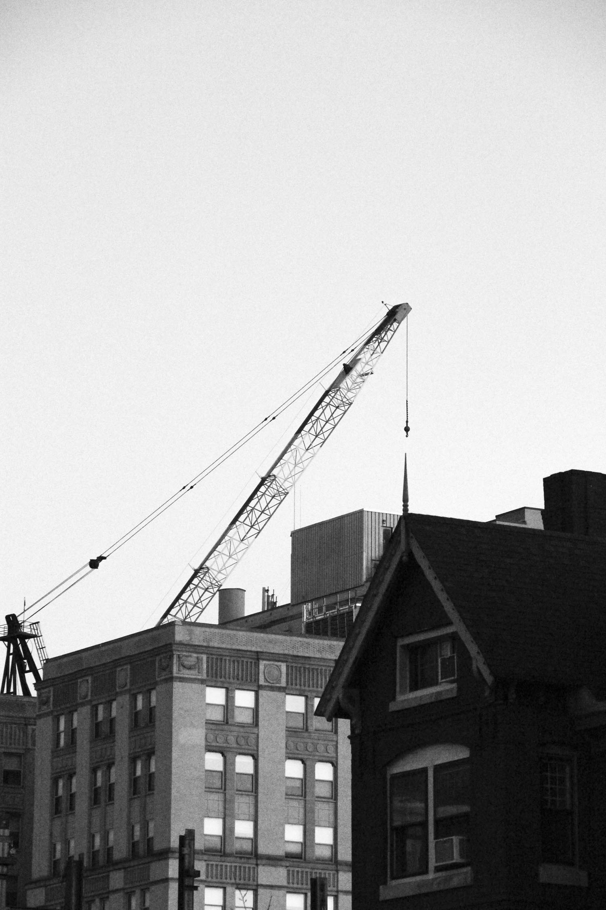
Shot on a Canon EOS Rebel T5i DSLR